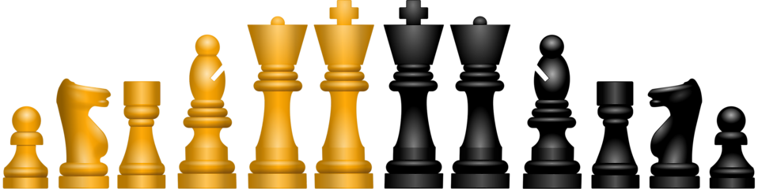

Chess
Chess is a board game that is played between two players which take turns moving their game pieces on a square board with many other small squares on the board called a chessboard. Want more infromation on chess, click this link: www.britannica.com
Chess Pieces
The game 'chess', consists of 16 chess pieces per player with six different types of pieces.
- Pawn
-
With eight pieces per set, pawns exist in the majority in a chess game. These pieces are placed in the second row from the end of the chessboard and depict the arrangement of frontline soldiers on the battlefield. This pawn sequence is referred to as a Pawn structure.
Pawns are not able to move horizontally. Instead, they move only in vertically and diagonally when capturing. A pawn moves through one square in one go, except for the very first turn in which the player can move it through two squares at once. If the opponent’s piece comes in the way of your pawn, you also get to capture that piece. Thus, pawns enable you to increase your chances of winning the game, as long as you keep using these pieces smartly and strategically.
- Rook
-
Rooks are shaped to look like towers or castles, which is also where the name of these pieces draws its inspiration from. A chess game features four rooks, 2 for each side of the game. The movement of this type of piece is unlimited, provided there is no other piece placed ahead of it. You can move it horizontally or vertically and backwards or forwards however you wish and can afford to.
- Knight
-
Two pieces featuring the horse’s head make up a set of knights for one player. In other words, the chess game includes four knights. The function of this piece has been the same ever since the game was created. However, minor changes in the representation of the horse’s head have been made.
Unlike rooks that cannot move over another chessman standing in their way, knight pieces allow you to jump over other pieces standing ahead of them. That is, as long as you follow the advised L-shaped pattern while moving it. For instance, move it one square towards the left or right and then two squares upward or downward from there. This perpendicular moving ability of a knight makes it less powerful without the combination of pawns.
- Bishop
-
There are four bishops in a chess game. Both players get two bishops to put right beside the queen and king. Since bishops offer movement in diagonal direction only, they remain in the same colored squares they start from. You can move a bishop to as many squares as you want as long as they are unoccupied. Saving your bishops can help you keep the game in your hands.
- King
-
The King moves one square at a time without any restriction of direction. It can freely proceed to horizontal, vertical, and forward positions. However, two kings can not sit adjacent to each other as this move brings the game to an end since it leads to a checkmate. Kings can capture a piece of the opposite side if it comes in their way unsupported. This technique also comes in handy to save the king from being attacked by a checkmate situation.
- Queen
-
The queen features a crown on the top. A complete chess board has two queens, one for each player of the game. The middle position of the first row from the player’s side is appointed for the queen only. Except for the jumping ability, there is no limitation in the movement of the queen. You can move it to the left, right, up, down, and slanting position. Thus, a queen has directional moving characteristics similar to those of bishops and rooks.